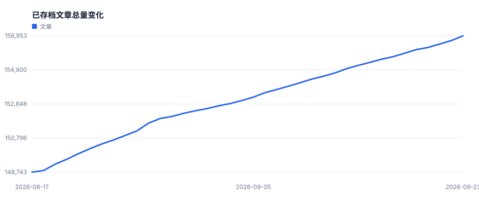
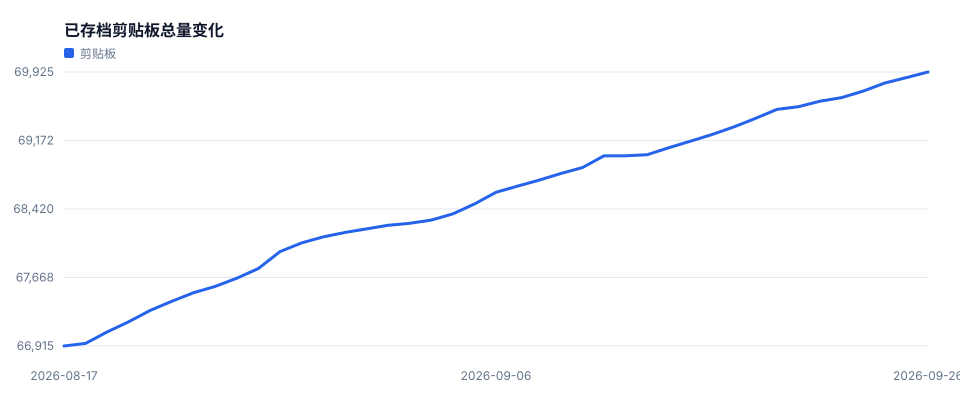
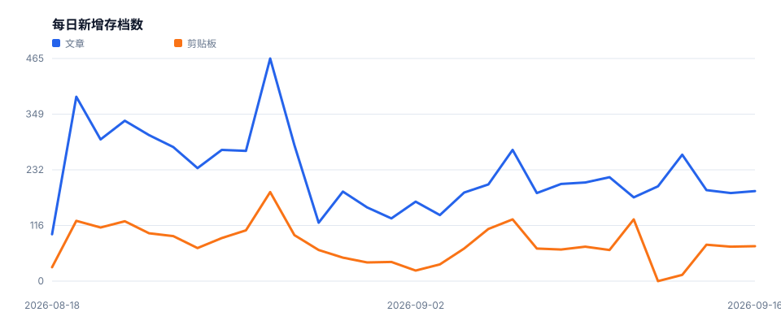
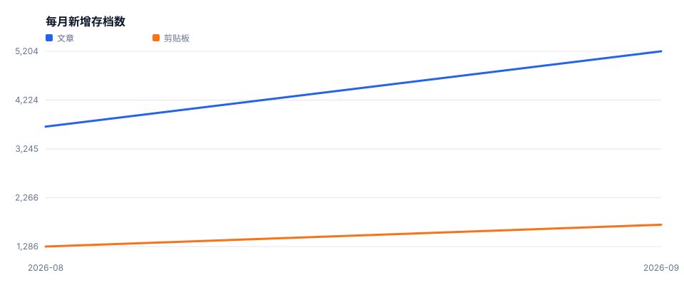
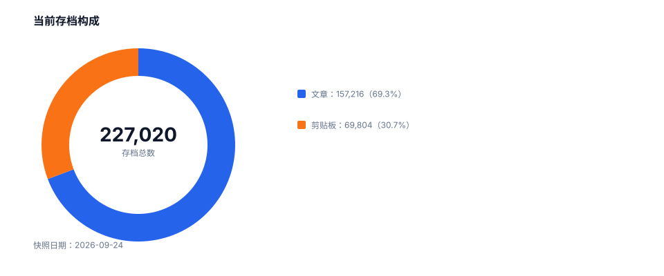

Luogu Saver History
Daily historical statistics from api.luogu.me.
Latest collection: 2026-08-17
Archived articles148,737
Archived pastes66,915
Total archive215,652
Total volume

Paste volume

New records

Monthly growth

Archive mix
